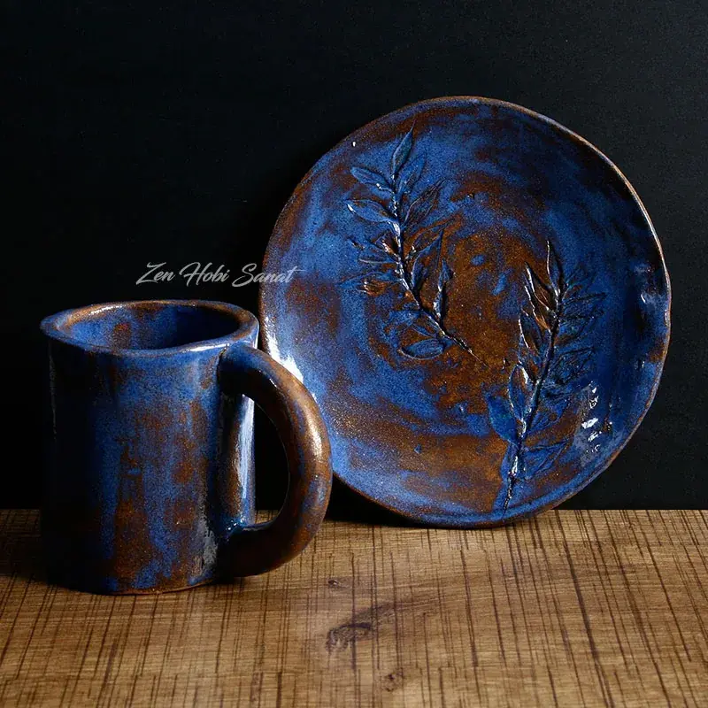

Sıkça Sorulan Sorular
Atölyeler, kayıt ve sanatın faydaları hakkında merak edilenler. Cevabını bulamazsanız bize yazın.
Sanatın insana faydaları
Sanat üretmek; stresi azaltır, dikkati ana getirir, özgüveni artırır ve duyguların sağlıklı bir şekilde ifade edilmesine alan açar. Düzenli pratik el-göz koordinasyonunu, yaratıcı problem çözmeyi ve sabrı güçlendirir.
Evet. El işine odaklanmak zihni 'şimdi'ye getirir ve gerginliği düşürmeye yardımcı olur. Atölyede telefonu ve günün yükünü bırakıp tek bir işe akmak (flow hâli) zihinsel olarak dinlendirir.
Hayır. Beyin her yaşta yeni beceri öğrenebilir. Atölyemizde ilk kez 60'lı yaşlarında tornaya oturan öğrencilerimiz var; önemli olan yetenek değil, düzenli ve keyifli pratik.
Kesinlikle. Sanat doğuştan gelen bir yetenek değil, öğrenilen bir beceridir. Doğru teknik ve biraz sabırla herkes üretebilir; biz her adımda yanınızda oluyoruz.
Çamurun iyi gelen tarafı
Çamurla çalışmak güçlü bir duyusal deneyimdir; dokunma duyusunu uyarır, el kaslarını ve parmak becerisini geliştirir. Çamuru şekillendirmenin ritmi meditatiftir; sabrı, ana odaklanmayı ve sonucu kabullenmeyi öğretir.
Çamurun yumuşaklığı rahatlatıcıdır ve hata yapıp yeniden başlayabilmek mükemmeliyetçilik baskısını azaltır. Üç boyutlu bir nesneyi sıfırdan var etmek güçlü bir tatmin ve özgüven duygusu verir.
Çamur hazırlama, elle biçimlendirme (sıkıştırma, sucuk ve plaka teknikleri), şekillendirme, kurutma, sırlama ve fırınlamayı öğrenirsiniz. Süreç sonunda günlük hayatta kullanabileceğiniz kendi eserinizi alırsınız.
Renklerle nefes almak
Resim; gözlem yeteneğini, renk ve kompozisyon algısını geliştirir, duyguları görsel bir dile çevirmeyi öğretir. Düzenli boyama dikkati toplar, kaygıyı azaltır ve görsel hafızayı güçlendirir.
Evet. Temel görme ve çizme alışkanlıklarından başlıyoruz; ayrıca fırça becerisi gerektirmeyen pouring art gibi tekniklerle daha ilk günden tatmin edici sonuçlar alırsınız.
Akışkan akrilik boyaların kontrollü dökülmesiyle yapılan, fırçasız ve son derece rahatlatıcı bir tekniktir. Sonucun bir kısmı boyanın doğal akışına bırakıldığı için her yaştan ve sıfır deneyimli herkese uygundur.
Üç boyutlu düşünmek
Heykel üç boyutlu düşünmeyi, hacim-denge algısını ve mekânsal zekâyı geliştirir. Malzemeye form verirken sabır, planlama ve ince motor beceriler güçlenir; soyut bir fikri somut bir nesneye dönüştürmek derin bir tatmin sağlar.
Ağırlıklı olarak kil ve alçı ile büst, figür ve serbest form çalışmaları yapıyoruz. Gözlem ve modelleme teknikleriyle adım adım ilerliyoruz.
Sanatın çocuklardaki etkileri
İnce motor becerileri, el-göz koordinasyonu, sabır ve odaklanma gelişir; özgüven ve kendini ifade etme güçlenir. Hata yapmaktan korkmadan deneyen çocuk, yaratıcı problem çözmeyi öğrenir.
Sanat; bilişsel, duygusal, sosyal ve fiziksel gelişimi aynı anda destekleyen ender etkinliklerden biridir. Renk, biçim ve malzemeyle özgürce deneyen çocuk hayal gücünü, dikkatini ve karar verme becerisini güçlendirir; ortaya bir eser çıkarmak ise özgüvenini besler.
Çocuk, kelimelere dökemediği duyguları renk ve biçimle güvenli bir şekilde ifade eder; bu da duygularını tanıyıp düzenlemesini destekler. Grup atölyelerinde paylaşmayı, sıra beklemeyi, birbirinin işini takdir etmeyi ve birlikte üretmeyi öğrenir.
Çamurla çalışmak güçlü bir duyusal deneyimdir; küçük el kaslarını, parmak kontrolünü ve el-göz koordinasyonunu geliştirir. Şekil verip bozup yeniden yapabilmek sabrı öğretir ve 'hata yapmak serbest' rahatlığıyla mükemmeliyetçilik baskısını azaltır.
Evet. Düzenli sanat pratiği dikkat süresini, ince motor becerileri ve görsel-mekânsal düşünmeyi geliştirir; bunlar yazma, okuma ve matematik gibi alanlara da olumlu yansır. Ayrıca ekrandan uzak, üretken bir mola sunarak zihni dinlendirir.
Yaratıcı Çocuk Atölyemiz okul çağındaki çocuklar için tasarlandı ve gruplar yaşa göre düzenlenir. Uygun gün ve saat için sizinle birlikte planlıyoruz.
Atölye ve kayıt
Hayır. Tüm malzeme ve ekipman atölyede hazır; yanınızda yalnızca keyfinizi getirmeniz yeterli. Önlük tarafımızdan sağlanır.
Evet. Katılamadığınız bir dersi, aynı ay içinde uygun olan diğer sınıflarımıza gelerek telafi edebilirsiniz. Aynı ay içinde telafi edilmeyen dersler ne yazık ki geçerliliğini yitirir.
Hafta içi, hafta sonu ve akşam seçeneklerimiz var. Kayıt sırasında size en uygun günü birlikte planlıyoruz; kontenjanlar küçük tutulduğu için birebir ilgi sağlanır.
Kayıt formunu doldurmanız yeterli; en kısa sürede sizi arayıp uygun atölye, gün ve saati birlikte belirliyoruz. Dilerseniz WhatsApp'tan da yazabilirsiniz.
Cevabını bulamadığınız bir soru mu var?
Size en uygun atölyeyi seçmek ve tüm sorularınızı yanıtlamak için buradayız. Hemen yazın, birlikte planlayalım.